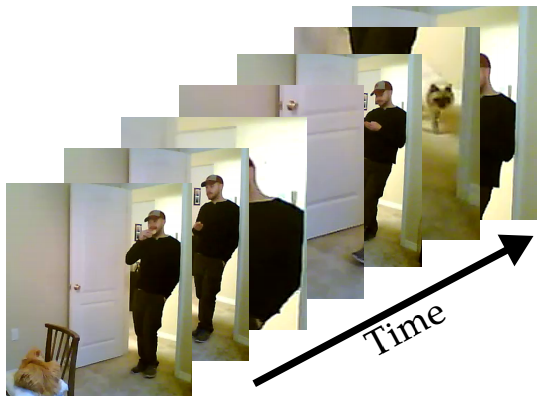
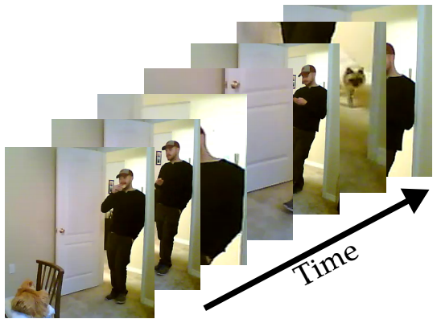

| We work on developing artificially intelligent systems that are able to reason about the visual world. Our research brings together the fields of computer vision, machine learning, human-computer interaction as well as fairness, accountability and transparency. We focus on three primary areas of exploration. The first is developing the fundamental perception building blocks of visual recognition, such as object detection, image parsing or human activity recognition. The second is designing human-machine interaction paradigms to enable computer vision systems to effectively learn from and collaborate with humans, including but not limited to studying the interplay between computer vision and natural language. The third is ensuring the fairness of the vision systems with respect to people of all backgrounds by improving dataset design, algorithmic methodology, measurement metrics and model interpretability. |
| We are very grateful to the National Science Foundation, Open Philanthropy, Cisco, Amazon, Adobe, Princeton School of Engineering and Applied Sciences, Princeton Alliance for Collaborative Research and Innovation, and Princeton Precision Health Initiative (current/ongoing) as well as to KAUST, Samsung, Google, Meta, Microsoft, and Princeton Center for Statistics and Machine Learning (past) for generous support of our research. |